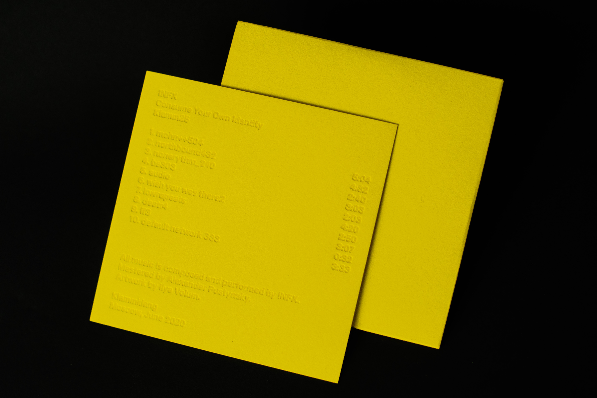
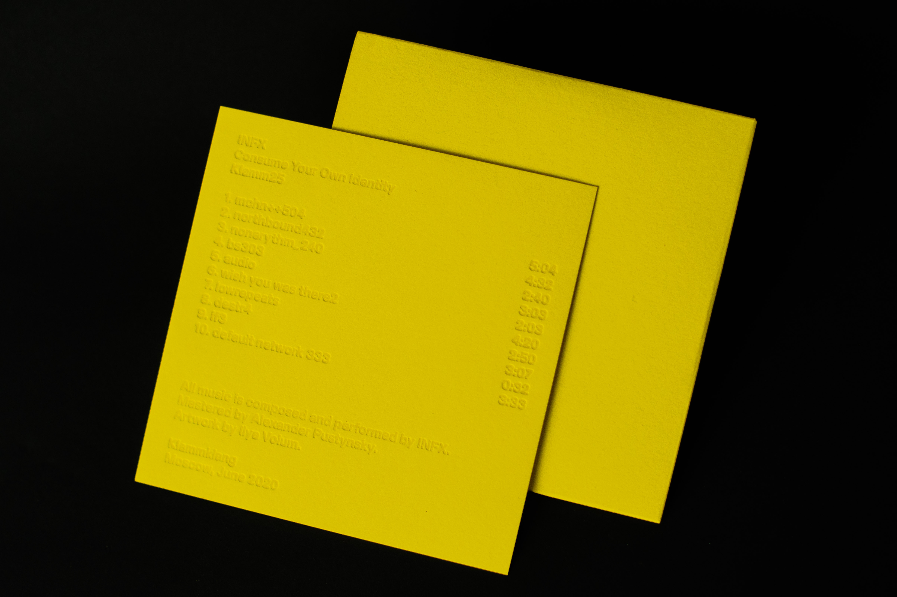

INFX
INFX/ИНФХ is a sound project made to discover sonic landscapes and boundaries beetwen modern electronic music, sound design and noise abberations.
28.09.2020
Specific Relation, mix for NTS radio.
Part of the show curated by Pavel Milykov/Buttechno
Listen on SC
Listen on NTS
 

08.07.2020
Consume Your Own Identity, released on Klam Klang label.
This release was made in collaboration with Holynose Lab to expand the boundaries of the tangible artifact through smell. The olfactory dimension was added with the intention of introducing the sense of artificiality present in the sound of the record prior to the listener experiencing the sound itself.
"With his background as visual artist, it feels like INFX is treating the acoustic space in the same three-dimensional fashion using sound as a more tangible agent to explore the effects of attention and anticipation. The moment you start to perceive this music as a peculiar sonic sculpture inside your brain, it turns into a spatio-temporal whirlwind. Patterns fall apart and the amusing sound you just discovered in between rhythms gets immediately dissolved in yet another disruptive timbre. You expect things to happen, but they prefer not to. Sometimes it causes vertigo, but the whole experience is like the most fabulous roller coaster ride one can imagine. Existing on the margins of various electronic music genres, Consume Your Own Identity is not about the frustrated expectation, but the primal expression. Rich in textures and frequencies, focused on dynamics it's not abstract at all. It's corporeal as f**k."
Preview on SC
Bandcamp


09.20.2018
Fences Of Metal, released on Gost Zvuk
label.
"Gost Zvuk continues its journey to the depth of today’s Russia experimental music scene with the debut EP from INFX (@infx_infx), yet another emerging artist from country’s capital Moscow. Young muscovite prefers to work on the margins of popular electronic music genres, using the complex broken rhythmical architecture to create his own kind of introverted club tracks for highly observant and thoughtful listeners. The resulting music is an ever-changing, multifaceted and polychromatic living organism with a constantly mutating structure — a truly unique piece of art that should not be overlooked."
Preview on SC
Bandcamp
04.24.2019
Suspended Noises, mix for Sygma radio.
15.09.2018
Renewable Source, mix for Sygma radio.

09.04.2018
Blue Uttered Terrain Part II, mix for Sygma radio.
21.03.2018
Blue Uttered Terrain Part I, mix for NTS radio.
Part of the programm curated by Pavel Milykov/Buttechno
Listen on SC
Listen on NTS